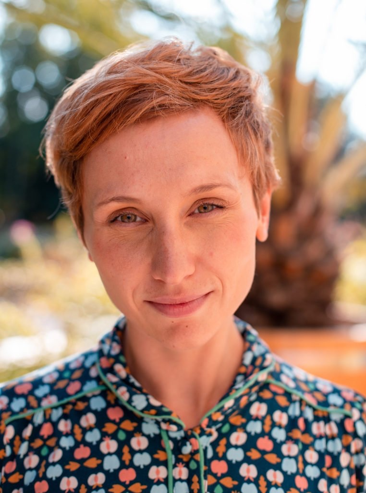

Anna Olesiewicz
Certyfikowana psychoterapeutka
Psychoterapia dorosłych i par (EFT)
anna.olesiewicz.pl →Konrad Olesiewicz
Certyfikowany Praktyk Internal Family Systems
Wsparcie osób dorosłych (IFS)
konrad.olesiewicz.pl →
Certyfikowana psychoterapeutka
Psychoterapia dorosłych i par (EFT)
anna.olesiewicz.pl →Certyfikowany Praktyk Internal Family Systems
Wsparcie osób dorosłych (IFS)
konrad.olesiewicz.pl →